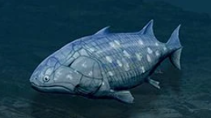

Żuchwowce to grupa kręgowców posiadających szczęki. Powstały one z dawnych łuków skrzelowych i pozwoliły zwierzętom skuteczniej zdobywać, rozdrabniać i połykać pokarm. Był to jeden z najważniejszych kroków w ewolucji kręgowców. Żuchwowce posiadają również parzyste płetwy lub kończyny, bardziej rozwinięty układ mięśniowy oraz lepsze narządy zmysłów niż ich bezżuchwowi przodkowie. Dzięki temu mogły aktywnie polować oraz szybciej się poruszać. Do żuchwowców należą ryby chrzęstnoszkieletowe, kostnoszkieletowe oraz wszystkie czworonogi. Oznacza to, że człowiek również jest żuchwowcem.
⬅ Powrót